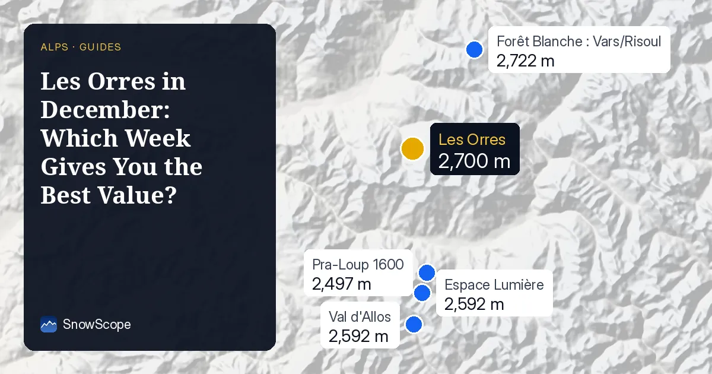

Les Orres in December: Which Week Gives You the Best Value?
If you want to ski Les Orres in December 2026 without paying high-season rates before the snow is reliable at the base, you need to match the ticket calendar with our snow history. The right week brings together a lower price and solid snow odds.
See the live snow forecast for Les Orres in the SnowScope appSnow depth, powder alerts and the 3D map, free.
How the price changes through December
The official site shows that adult 1-day pass prices shift as the month goes on. From 5-11 December 2026, the low season price is 34 EUR. Moving into the mid season from 12-18 December 2026, the price rises to 38.50 EUR. Once you reach the high season from 19 December 2026, the adult 1-day pass costs 45.50 EUR.
These step-by-step price changes let you time your visit. You pay less at the start of the month, but you must check if the snow depth matches your expectations before you book.

December snow at three heights
Our snow history of 46 past winters shows clear differences between the bottom, mid-mountain, and top of the lifts. At the bottom of the lifts at 1554 m, the usual December depth is 23 cm, and the usual depth on 15 December is 22 cm. A thin December brings 3 cm or less in 1 winter in 10, while a deep December brings 53 cm or more. At mid-mountain at 2127 m, the usual December depth is 57 cm, with 50 cm usual on 15 December, and the thin-to-deep range spans from 19 cm to 112 cm. At the top of the lifts at 2700 m, the usual December depth reaches 97 cm, with 94 cm usual on 15 December, ranging from 41 cm in a thin December to 200 cm in a deep December.
The bottom can stay thin early on. The share of winters with 30 cm or more at the bottom is only 15 % from 1-7 December, rising to 26 % from 8-14 December, 41 % from 15-21 December, and 52 % from 22-28 December. At mid-mountain, the share of winters with 30 cm or more is already 61 % from 1-7 December, 78 % from 8-14 December, and reaches 87 % from 15-21 December and 89 % from 22-28 December. At the top, the share sits at 87 % from 1-7 December and climbs to 96 % from 15-28 December.
Right now, snow now numbers for 13 November 2026 show 0 cm at the bottom of the lifts with 2 cm of new snow expected in the next 7 days. Mid-mountain has 1 cm with 29 cm of new snow expected, and the top has 10 cm with 40 cm of new snow expected. The two-week new snow outlook from 13 November 2026 to 26 November 2026 for mid and above points to a middle of 67 cm within a range of 55 to 80 cm.
The week where price and snow line up
Put the two calendars side by side and the best match is the mid-season week, 12-18 December 2026. The adult 1-day pass then costs 38.50 EUR, against 45.50 EUR from 19 December, and the snow odds are much better than in the opening days.
At mid-mountain, 30 cm or more was on the ground in 78 % of past winters during 8-14 December and in 87 % during 15-21 December; at the top it was 96 % for the second half of the month. So you ski the upper runs on solid snow and still pay the mid-season rate, before the Christmas prices arrive.
Against Vars-Risoul
It helps to compare Les Orres with nearby Vars-Risoul to see how the numbers stack up. Vars-Risoul offers a larger mapped ski area with 131 km of mapped runs and 38 mapped lifts, compared to the mapped ski area of Les Orres with 54 km of runs and 21 mapped lifts. The vertical drop is similar, with Vars-Risoul spanning from 1632 m to 2722 m, and Les Orres spanning from 1554 m to 2700 m.
In terms of snow, Vars-Risoul shows a usual December depth of 33 cm at the base (1632 m), 51 cm at mid-mountain (2177 m), and 77 cm at the top (2722 m). Its usual depth on 15 December is 32 cm at the base, 48 cm at mid-mountain, and 76 cm at the top. For pricing, Vars-Risoul lists an adult 1-day Forêt Blanche pass for winter 2026-27 at 58 EUR, and an adult 6-day pass at 298 EUR. Les Orres gives you more flexible daily pricing steps starting at 34 EUR in low season, making it a lower-cost choice if you target the right weeks.
What changed since the 1980s
Looking back across our 46 past winters, December averages show a positive shift in snow depth at higher elevations. If we compare the first 15 winters (1980-81 to 1994-95) with the last 15 winters (2011-12 to 2025-26), the numbers tell an interesting story. At mid-mountain, the December average was 44 cm in the first 15 winters, and it rose to 58 cm in the last 15 winters. At the top of the lifts, the December average was 76 cm in the first 15 winters, and it increased to 101 cm in the last 15 winters.
At the bottom of the lifts, the December average moved from 21 cm in the first 15 winters to 24 cm in the last 15 winters. The thinnest December recorded at mid-mountain was 2 cm in the 2015-16 season, while the deepest December at mid-mountain reached 128 cm in the 1996-97 season. Last winter, the 2025-26 season brought a December average of 19 cm at the bottom, 42 cm at mid-mountain, and 72 cm at the top.
Tips for skiers
- Book your ski pass on the official site for the 12-18 December 2026 week to secure the 38.50 EUR mid-season rate before high-season prices start on 19 December.
- Focus your skiing at mid-mountain (2127 m) and the top (2700 m) in December, where the share of winters with 30 cm or more is 87 % to 96 % during mid-month.
- Check the local avalanche bulletin before going off-piste, especially when new snow totals from the outlook add depth to the upper elevations.
- Expect thin cover at the base (1554 m) early in the month, where the usual December depth is only 23 cm and the share of winters with 30 cm or more is just 15 % from 1-7 December.
More maps (external sites)
References and credits
- Les Orres, official ski pass prices 2026-27 www.lesorres.com/forfaits-de-ski
- Risoul, official ski pass page, Forêt Blanche 2026-27 risoul.labellemontagne.com/fr/hiver/forfaits/risoul-foret-blanche/
- Risoul, official 6-day Forêt Blanche pass page 2026-27 risoul.labellemontagne.com/fr/hiver/forfaits/6-jours-foret-blanche/
- SnowScope, December snow at three heights and today's snow map snowscope.app/
About these numbers
Snow numbers: SnowScope snow history, 46 past winters (1980-81 to 2025-26) at three heights of each resort (a model of the past corrected for height: an estimate for an area, not resort measurements); December figures computed from the daily depths of those winters. Snow now and the two-week outlook: SnowScope forecasts (outlook from ECMWF and GFS, a range, not a promise). Lifts and runs: OpenSkiMap mapping. Prices: the official resort pages listed below, read on 2026-11-13; prices can change, check before booking.
Official avalanche bulletins: Météo-France – Bulletin d'estimation du risque d'avalanche
Cite this report
For research, teaching or the press: the numbers and charts are free to reuse under CC BY 4.0 with this citation.
SnowScope (2026), Les Orres in December: Which Week Gives You the Best Value?, https://snowscope.app/blog/en/2026/11/les-orres-december-ski-week-by-week-prices-2026.html, accessed 2026-11-14
SnowScope (Atlas Labs). (2026, November 14). Les Orres in December: Which Week Gives You the Best Value?. SnowScope snow reports. https://snowscope.app/blog/en/2026/11/les-orres-december-ski-week-by-week-prices-2026.html
BibTeX
@misc{snowscope2026lesorresdecemberskiweekb,
author = {{SnowScope (Atlas Labs)}},
title = {Les Orres in December: Which Week Gives You the Best Value?},
year = {2026},
month = nov,
howpublished = {\url{https://snowscope.app/blog/en/2026/11/les-orres-december-ski-week-by-week-prices-2026.html}},
note = {Published 2026-11-14 15:51 UTC; accessed 2026-11-14}
}· CC BY 4.0 · Methods, data and tools →
Les Orres: snow and temperature by height, this winter vs last (tools) →
Follow Les Orres
Free: a message when fresh snow is coming, and the forecast every morning.
More snow reports

Dent de Vaulion's upper slopes face rain as freezing level reaches 2800 m Thursday; higher resorts get fresh snow for the weekend.

Bonneval-sur-Arc (France) has the deepest snow in the Alps today, with about 52 cm on its upper slopes. La Grave follows with 52 cm, then Orelle with …

In 24 of 46 winters, resorts on the Italian and southern French side of the Alps had a relatively bigger winter than the northern side. The chart, the big years and the weather behind them.